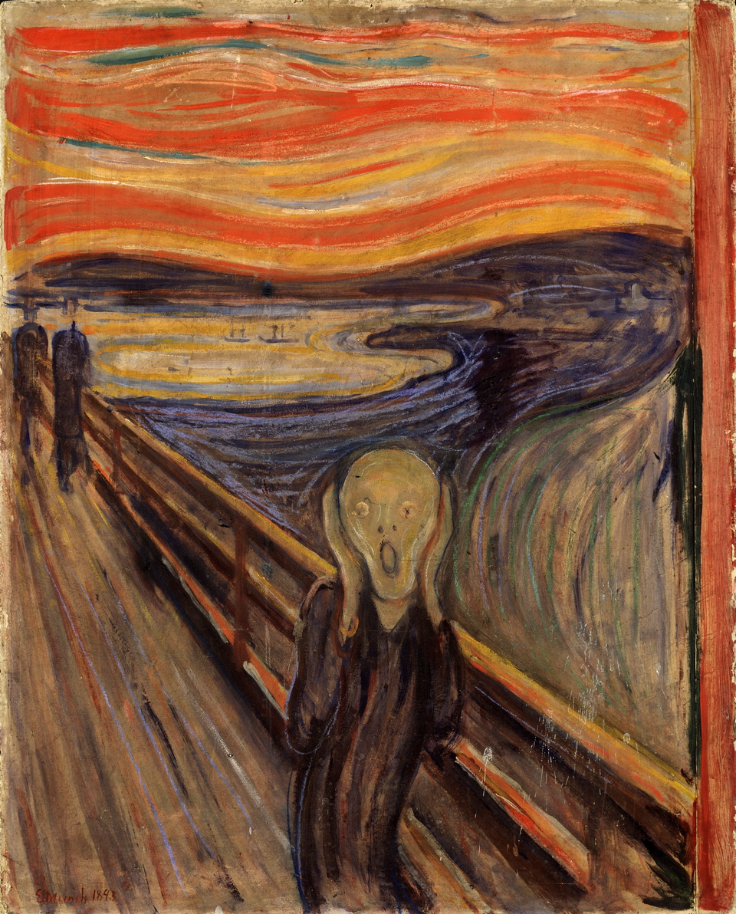
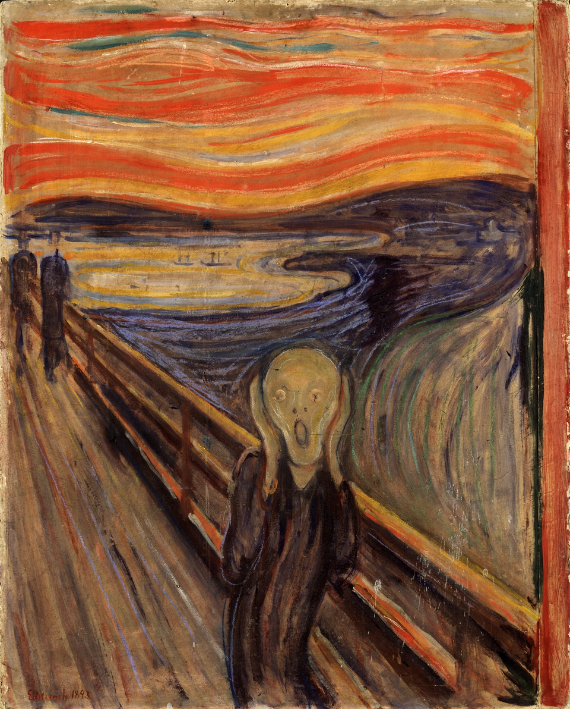
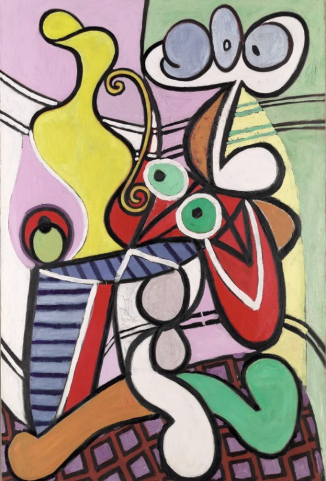
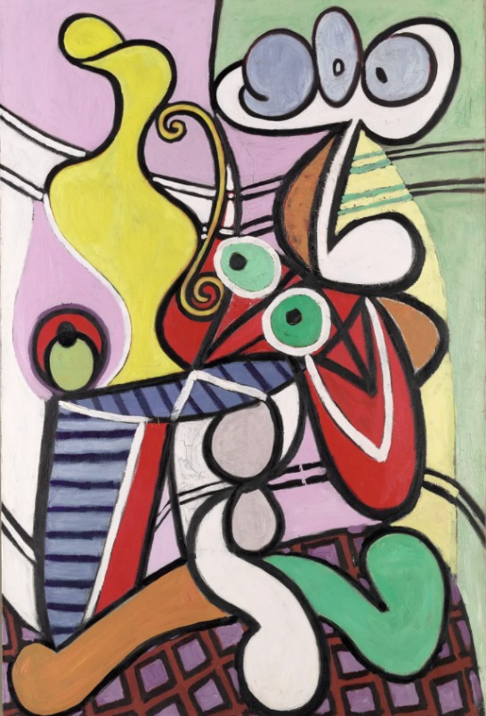

Paintings Sonification
Our creative project will focus on sonification, which is the process of translating data into sounds. Our data will be extracted from paintings, we would like to offer a new way to experience visual arts. Nowadays artists, alongside museums and galleries are looking for more immersive experiences and new ways to attract visitors. We would like to propose a new perspective on well-known paintings by providing an auditory perception of them as an alternative or complementary way to experience their original visual characteristics.
Sonification is strongly linked to computer music as they share the manipulation of digital technology and sound design principles to create and organize sound. Whether used in scientific fields or artistic contexts, sonification enhances our senses and expands our ways to experience and understand the world around us.
The Connections Between Sonification and Painting
So, Why famous paintings?
Familiarity breeds engagement: people already have emotional connections and are familiar with the artworks, it is a lot easier to convey concepts like sonification from artworks.
Example: Starry Night (Van Gogh) → A swirling, dreamy soundscape (using rising/falling arpeggios) mirrors its emotional turbulence, enhancing the viewer-listener's experience.
Technical benefits from using famous paintings: these well-known paintings often have unique yet strong composited patterns and colors, for example: The Scream (Munch) → Distorted, dissonant sounds (reflecting the anxiety in the painting) vs. a random abstract piece where meaning is unclear.
Lack of pre-existing connection → Harder for audiences to engage.
Unclear visual language → Sonification may feel arbitrary.
No shared cultural reference → Less educational or emotional impact.
Sometimes it is better not to use real-life sounds for sonifications on paintings, the reason for this is that for photos, you can use real-world sounds (e.g., a photo of a forest → nature audio), but for paintings, you can play with a lot more with a different creative approach, it is less subjective onto sound than using pre-existent imagery in real life. The fun in art is to determine its story yourself. Same with sounds on paintings.
 



 
